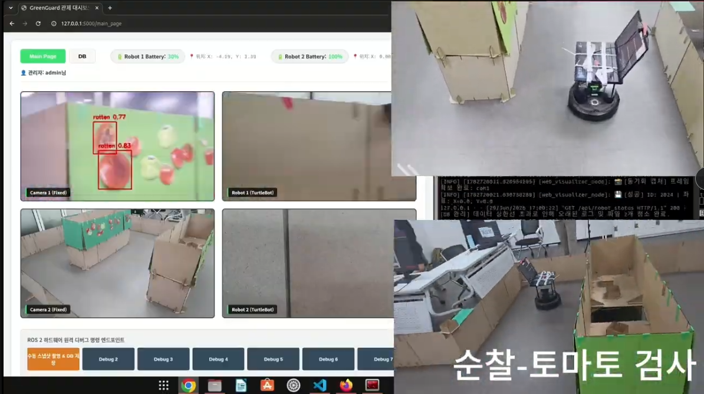
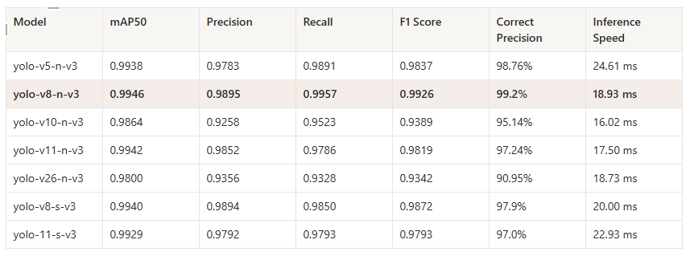

PROJECT TITLE
스마트팜 Vision 기반 이상·병충해 탐지 및 AMR 연동
Overview

스마트팜을 순찰하는 AMR에 Computer Vision을 적용해 토마토의 병충해·부패 상태와 침입자를 실시간으로 탐지하고, 탐지 결과를 관리자 모니터링과 AMR의 순찰·추적 행동에 활용하는 시스템을 구현했습니다.
공개 데이터 기반 모델을 실제 Web Cam 환경에 적용하며 발생한 Domain Shift를 분석하고, 실제 운영 환경의 데이터를 추가해 Detection 성능을 개선했습니다. 또한 ROS2 기반 Vision Pipeline을 조정해 AI 추론 결과가 주행 중에도 안정적으로 Robot Action까지 연결되도록 통합했습니다.
Problem
스마트팜을 순찰하는 AMR이 토마토의 병충해·부패 상태와 침입자를 실시간으로 탐지하고, 이를 순찰·추적 및 관리자 모니터링에 활용할 수 있는 시스템을 구현했습니다.
초기 테스트에서는 공개 데이터와 실제 Web Cam 환경의 차이로 탐지 성능이 저하됐으며, 로봇 주행 중에는 탐지 결과와 이미지가 서버에 안정적으로 전달되지 않는 문제가 발생했습니다.
Analyze
Vision
여러 YOLO 계열 모델을 비교한 결과, AMR에서 실시간으로 동작하기 위해서는 단순 정확도보다 탐지 성능과 추론 속도의 균형이 중요하다고 판단했습니다.
또한 Kaggle 데이터와 실제 Web Cam 환경 사이에 조명·각도·해상도·객체 크기 차이가 존재해 Domain Shift가 발생했고, 빨간색 영역이나 사람 얼굴과 같은 유사 객체를 토마토로 잘못 탐지하는 사례를 통해 실제 환경의 Negative / Background 데이터가 부족함을 확인했습니다.
Robot Integration
로봇 주행 중에는 객체가 카메라에 노출되는 시간이 짧아 Detection과 이미지 저장이 간헐적으로 누락됐습니다.
이를 Vision 모델 자체의 문제가 아니라 Camera 입력 주기, AMR 이동 속도, Server 저장 처리 간의 타이밍 문제로 분석했습니다.
Action
1. Detection Model Selection

YOLOv5 · v8 · v10 · v11 · v26의 Nano / Small 모델 7종을 동일한 기준으로 비교했습니다.
- mAP50
- Precision
- Recall
- F1-score
- Inference Speed
정확도와 실시간성을 종합적으로 비교해 YOLOv8-n을 최종 Detection 모델로 선정했습니다.
2. Domain-specific Dataset Improvement
공개 데이터만으로는 실제 운영 환경을 충분히 반영하기 어렵다고 판단해, 실제 Web Cam 이미지를 직접 수집·라벨링하고 Fine-tuning했습니다.
또한 False Positive 사례를 기준으로 객체가 존재하지 않는 실제 Background 이미지 30장을 Negative Sample로 추가해 유사 객체를 잘못 탐지하는 문제에 대응했습니다.
3. ROS2 Vision Pipeline 안정화
주행 중 객체 노출 시간이 짧아 Detection 결과와 이미지 저장이 누락되는 문제를 해결하기 위해 다음과 같이 조정했습니다.
- ROS2 Image Publisher 주기 0.1s → 0.03s 조정
- TurtleBot 이동 속도 감소
- 객체 노출 시간 및 Server 전송 Frame 확보
이를 통해 주행 상황에서도 Vision 결과가 안정적으로 전달되도록 Pipeline을 조정했습니다.
4. AMR Tracking Integration
침입자 대응 시나리오에서는 Detection 결과에서 사람 객체만 선별하고 Confidence와 Bounding Box 정보를 활용하는 후처리 로직을 구현했습니다.
이를 AMR Tracking Module과 연결해 탐지 결과가 단순 Vision Output에서 끝나지 않고 실제 로봇의 추적 행동으로 이어지도록 통합했습니다.
Camera → Object Detection → Person Filtering → Tracking Command → AMR Tracking
Result
Vision
- YOLO 계열 7종을 비교해 정확도와 실시간성을 고려한 YOLOv8-n 선정
- 최종 모델에서 mAP@50 99.46%, Precision 98.95%, Recall 99.57%, F1-score 99.26% 달성
- 실제 Web Cam 데이터와 Negative Sample을 반영해 운영 환경의 Domain Shift 및 유사 객체 오탐에 대응
System Integration
- ROS2 Image Publisher 주기와 AMR 이동 속도를 조정해 주행 중 Detection 및 이미지 저장 안정성 개선
- Detection 결과를 침입자 Tracking Module과 연결해 Vision Perception → AMR Tracking Pipeline 구현
- AI 모델의 추론 결과를 실제 AMR의 순찰·탐지·추적 행동까지 연결
Demo
More Detail
Detection 모델 비교, 실제 환경 데이터 개선, ROS2 Vision Pipeline 안정화 및 AMR Tracking Integration의 상세 내용을 Presentation에서 확인할 수 있습니다.
View Presentation ↗